Rows 1-3 show A. Row 4 puts A beside B on the same screen. A is black ink on cream paper, the easiest for older eyes, also in daylight. B keeps the original's dark look, calmer and bigger.
Either way: same facts, same order, nothing moves, nothing goes forward by itself. About 65 screens in total, around 10 minutes at an easy pace. The original presentation is not touched.
Old: moving lines, small grey words, a glowing button.
New: nothing moves. Big black words on cream, one big Mulai button, and a line that says to press it.
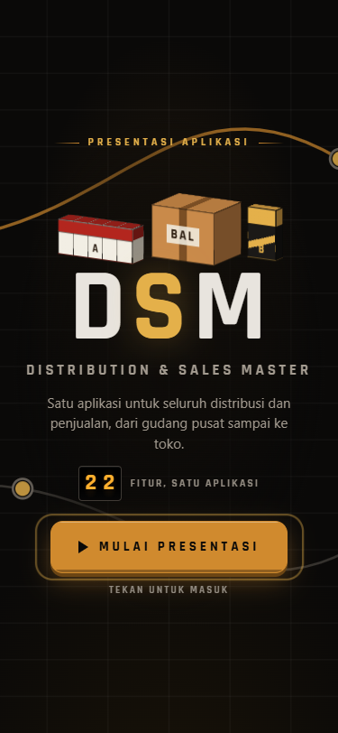
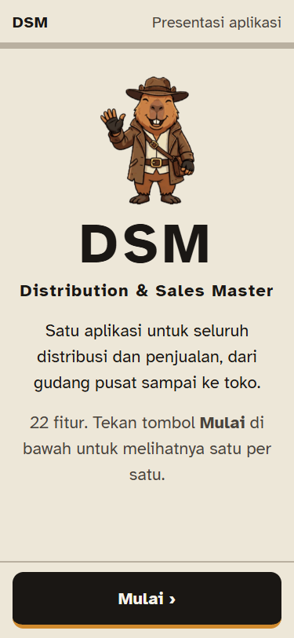
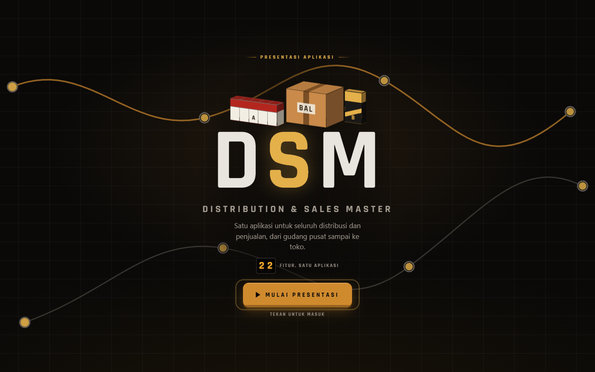
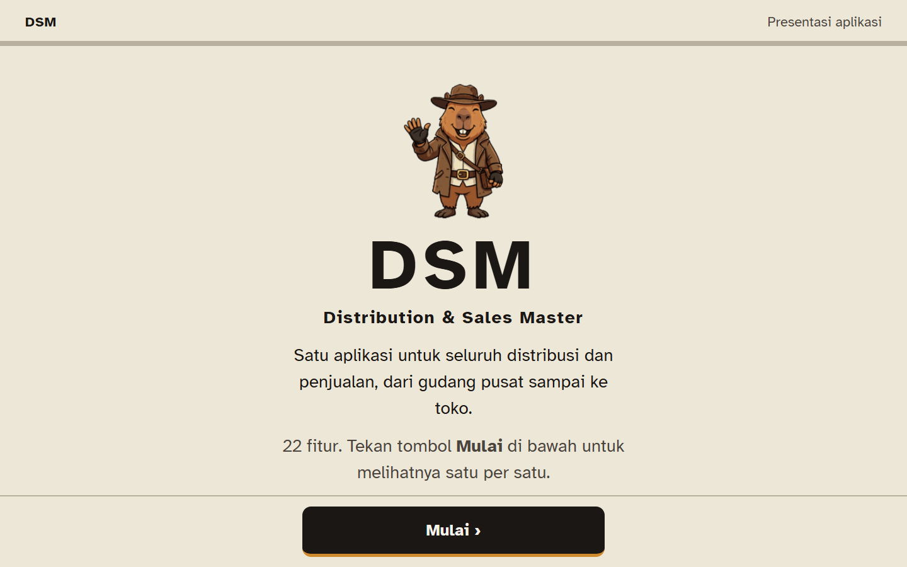
Old: a five-line paragraph in small type, a moving map, a sliding menu at the bottom.
New: two short sentences. Each shop lamp also says its colour in words. Back and Next are thumb-sized. On a phone, a screen taller than the glass makes the big button say Lanjut ke bawah ↓ first, so nothing gets skipped.
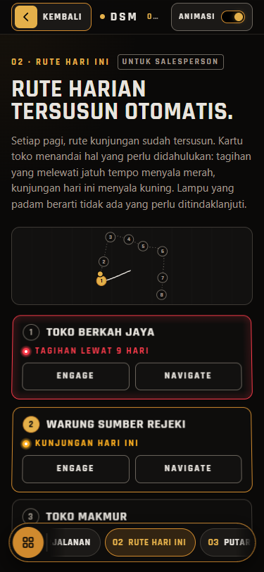
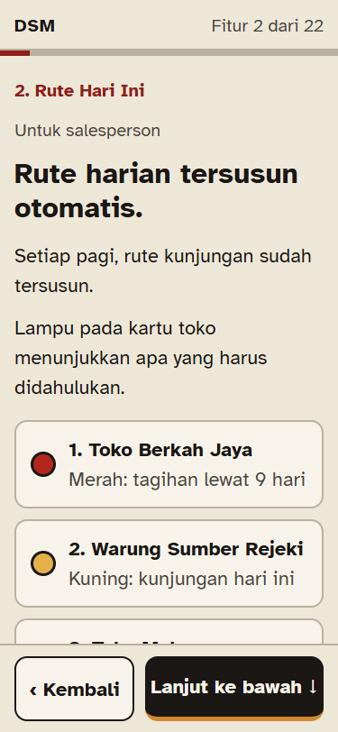
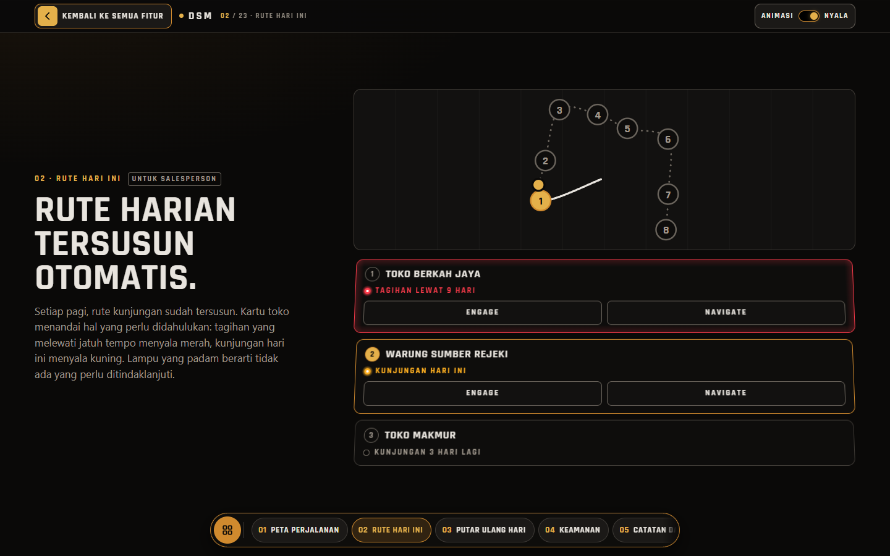
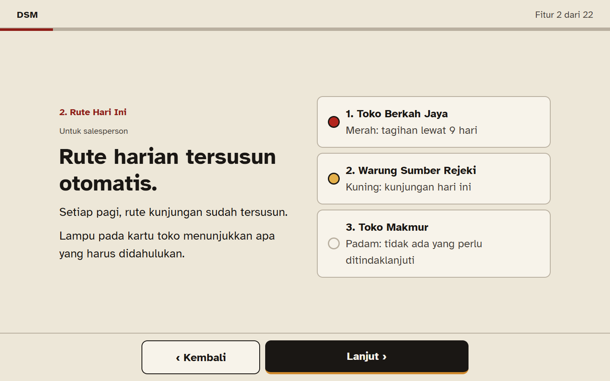
Old: one screen holding a long paragraph, 13 boxes and a 3D tower that turns.
New: 10 calm screens, one point each. The line bagian 3 dari 10 tells them where they are. Every fact from the old slide is kept.
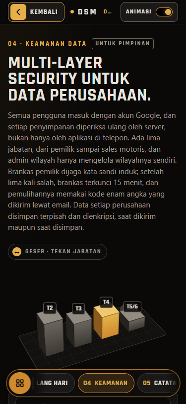
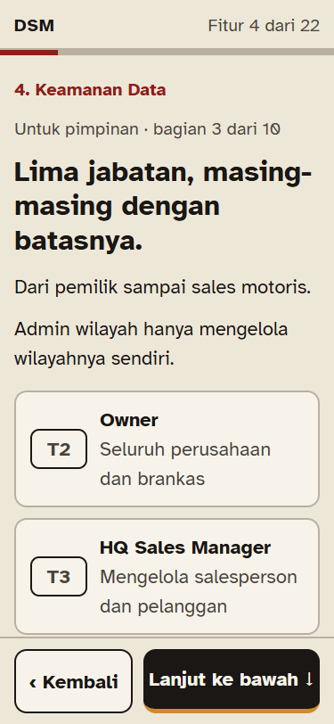
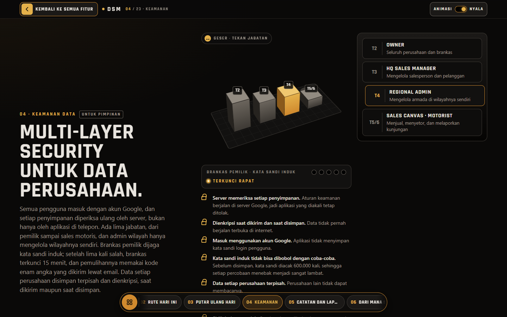
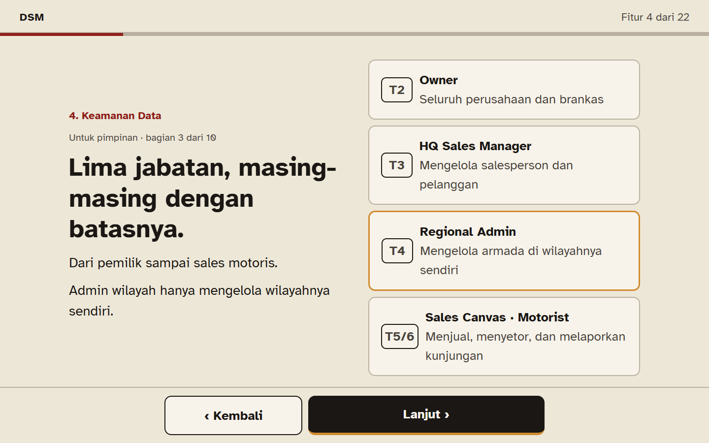
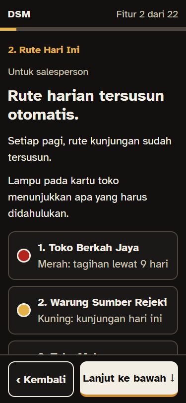
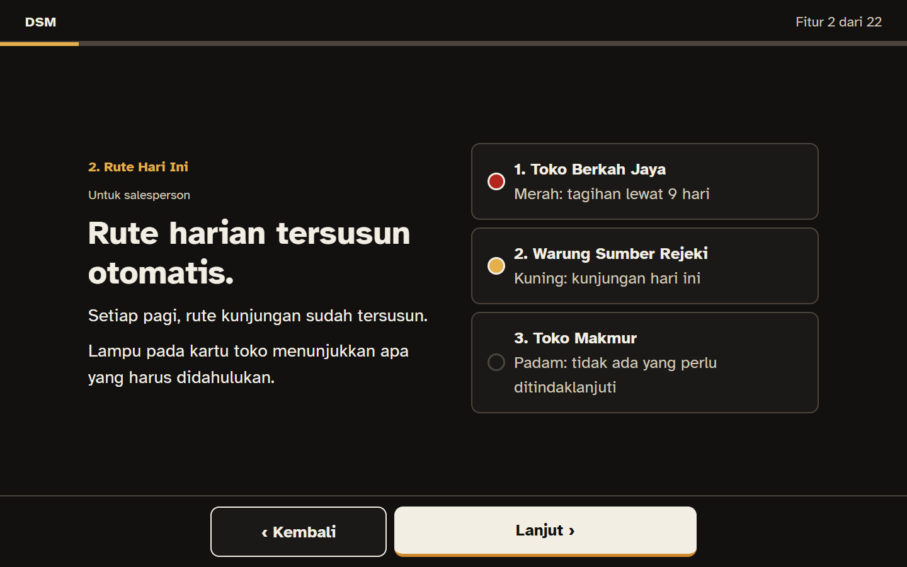
All text in the new version is 20px or bigger on a phone (measured: smallest is 20px). Font: Atkinson Hyperlegible, drawn for readers with low vision. No blue, no green, gold only as a line or a lamp.